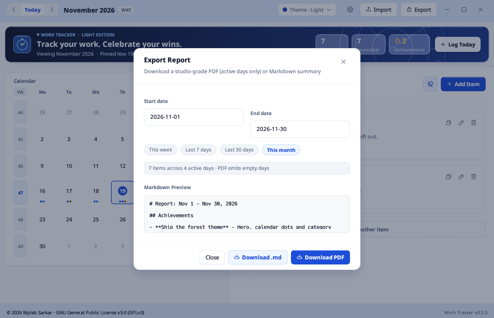

Weekly work log for engineers
Work Tracker keeps each day's title, category and win on a month calendar, then writes that range as Markdown or a PDF. The file stays on this computer.
Version 0.3.9, GPL-3.0. See the export
The report
Pin a Thursday, star the win, and the PDF prints the achievement first. Empty days stay off the page, so the file is the week with work in it.
Export the work log
Pick this week, the last 7 days, the last 30 days or this month. The PDF lists achievements first and leaves out empty days. Import merges a Markdown report, or replaces that date range.

Work log themes
Light, Dark, Warm, Forest, Ocean and Rose share one layout. The choice sits in prefs.json, so the next launch opens in the same theme. Forest is pine and emerald.

Questions
Where does the work log live?
On this computer, in ~/.weekly-tracker/data.json, with the theme in prefs.json.
What does the work log PDF keep?
Active days only. Achievements come first. Empty days are omitted.
Can a Markdown work log come back?
Import from the toolbar or Settings, Storage. Merge skips a duplicate date, title and category. Replace date range overwrites that span.
How do I get the work log?
GitHub Actions builds a Linux binary and a Windows setup on each release tag.